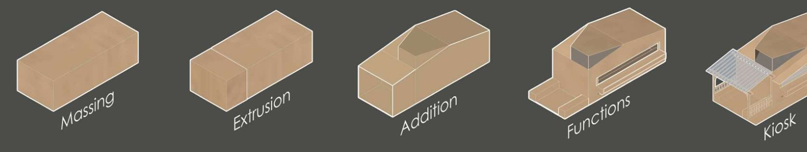
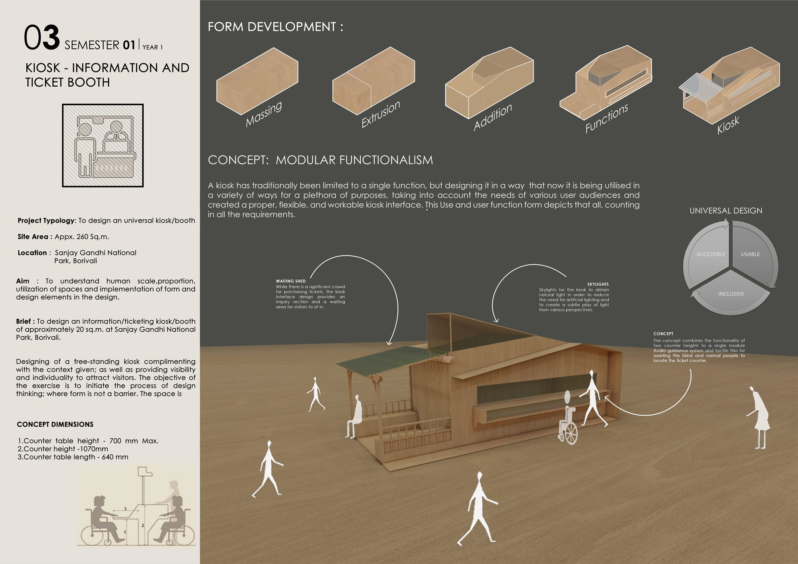

Work / 09 · Design studio
Kiosk
An information and ticket booth for Sanjay Gandhi National Park, designed to be usable by everyone.

- Type
- Architectural design studio, Semester 1
- Year
- 2019
- Location
- Sanjay Gandhi National Park, Borivali, Mumbai
- Brief
- Information and ticketing booth of about 20 m² on a site of about 260 m²
- Scope
- Human scale, proportion, ergonomics, universal design
A first-semester exercise in human scale and proportion: a free-standing kiosk that complements its setting in the national park while staying visible enough to draw visitors. The aim was to begin a process of design thinking in which form is not a barrier.
A kiosk is usually built for one function. Following a concept of modular functionalism, this one brings ticketing, enquiries and a shaded waiting area into a single, flexible module designed around the principles of universal design: accessible, usable and inclusive.
01Designing for everyone
Two counter heights of 700 mm and 1,070 mm, with a 640 mm counter depth, serve standing visitors and wheelchair users at the same window. Audio guidance and tactile paving lead visually impaired visitors to the ticket counter. A waiting shed shelters queues at busy times, and skylights bring in daylight, reducing the need for artificial lighting.



